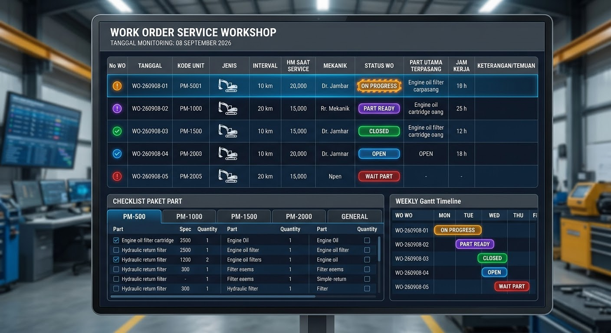
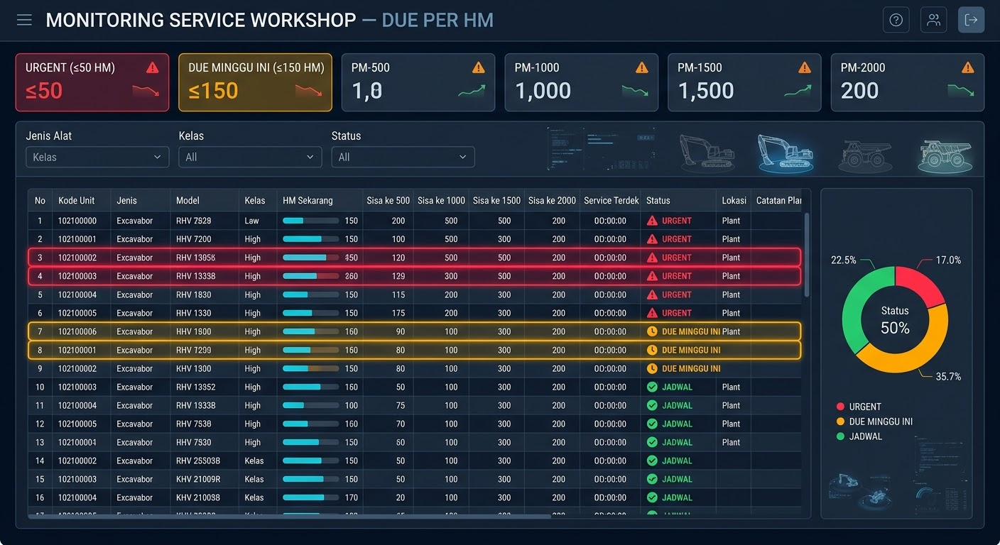
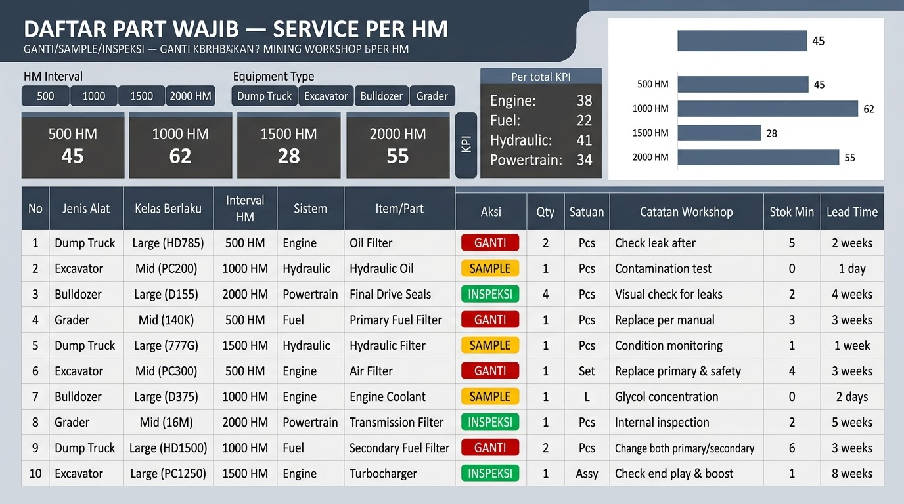
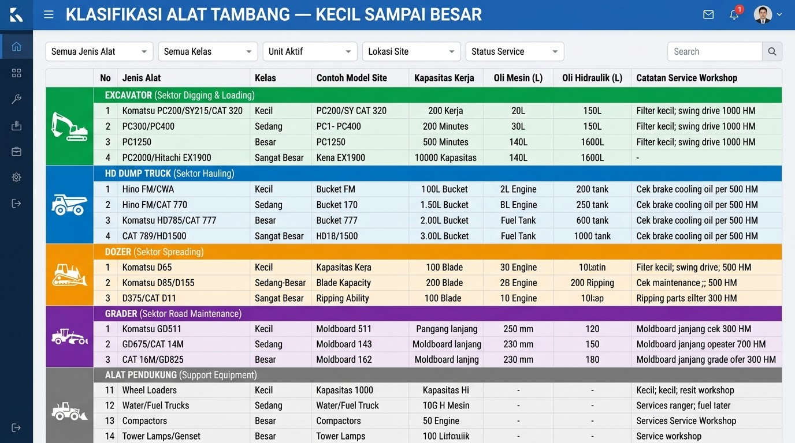

Construction • Engineering • Digital Solutions
Fajar Tri Suhartono
Construction Site Manager | Civil & Foundation | Project Controls | Digital Engineering
Construction professional combining field execution, engineering documentation and practical digital tools to improve project visibility, reporting and day-to-day workflows.
Professional positioning
Field execution meets digital problem-solving.
My work sits at the intersection of construction operations and digital workflow improvement — from piling, lifting and site coordination to dashboards, reporting tools, offline mobile apps and engineering calculators.
Core expertise
Construction & Site Management
Digital Engineering & Automation
Selected project portfolio
Civil / Foundation
Pile Foundation 3D
Interactive foundation visualization covering PC pile Ø400, project layout, 3D representation and engineering information.
View project →
HSSE / Construction
HSSE Daily + E-Permit
Practical digital workflow for daily HSE reporting and permit communication, including WhatsApp-ready output.
Open demo →
Lifting / Engineering
CraneCalc
Interactive crane capacity and working-radius support tool for lifting-plan preparation.
Open tool →
Heavy Equipment
Service Workshop Dashboard
Dashboard concepts for work orders, service due by HM, preventive-maintenance parts and equipment classification.
View dashboard →
Proof of work






Digital products & demos
Professional documents
Potential roles & collaboration
Relevant opportunities can include:
For clients, I can also support practical digitalization of construction workflows — reporting, dashboards, calculators, field forms and lightweight mobile web applications.
Let's work together
Have a project, site requirement, or workflow to improve?
Contact me to discuss construction roles, project support or practical digital engineering solutions.